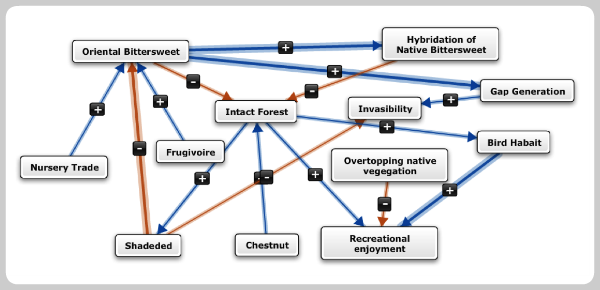

What is Mental Modeler?
Mental Modeler is modeling software that helps individuals and communities capture their knowledge in a standardized format that can be used for scenario analysis.
Based in Fuzzy-logic Cognitive Mapping (FCM), users can easily develop semi-quantitative models of environmental issues, social concerns or social-ecological systems in Mental Modeler by:
- Defining the important components of a system
- Defining the relationships between these components
- Running "what if" scenarios to determine how the system might react under a range of possible changes.
 Check out our latest videoWhat is Mental Modeler
Check out our latest videoWhat is Mental Modeler
Why was it developed?
Mental Modeler was developed to support group decision-making, allowing users to collaboratively represent and test their assumptions about a system in "real time". Additionally, it has also been applied as a social science research tool to measure the individual or shared 'mental models' that often underlie human decision-making.
How do I get started?
Mental Modeler can be accessed as an online tool, with which you can create, upload, and revise models, assign and assess preferred state, view component and model metrics, and run scenarios on models.
What is Fuzzy-Logic Cognitive Mapping?
Fuzzy-Logic Cognitive Mapping (FCM) is a parameterized form of concept mapping where you can develop qualitative static models that are translated into semi-quantitative dynamic models. Bart Kosko originally developed FCM in 1986 as a way to structure expert knowledge using a soft systems programming approach that is "fuzzy", thought to be similar to the way that the human mind makes decisions.
FCM represents knowledge by defining three characteristics of a system:
- The components of the system
- The positive or negative relationships between the components
- The degree of influence that one component can have on another, defined using qualitative weightings (e.g. high, medium, or low influence)
The analytical mechanics of FCM are based on examining the structure and function of concept maps, using graph theory-based analyses of pairwise structural relationships between the concepts included in a model. These models can be used to examine perceptions of an environmental or social problem or to model a complex system where uncertainty is high and there is little empirical data available.
Mental Modeler allows you to build Fuzzy-logic Cognitive Maps easily and intuitively. Once models are built, increasing or decreasing the components included in the model allows you to examine different scenarios of change. Because of their flexibility, FCM have been used in a range of scientific disciplines, from political science to economics to ecology.
FCM and Mental Modeler based research articles
-
Henly-Shepard, S., S Gray, and L Cox. 2015. The use of participatory modeling to promote social learning and facilitate community disaster planning. Environmental Science & Policy 45, 109-122
Download Article -
Nayaki, A., Gray, S., Lepczyk, J. Skibins, D. Rentsch. 2014. Local-scale dynamics and local drivers of bushmeat trade. Conservation Biology xx-xx. doi: 10.1111/cobi.12316
Download Article - Halbrendt, J., S. Gray, S., Radovich, T., Crow, S., Kimura, A.. 2014. Differences in farmer and expert beliefs and the perceived impacts of conservation agriculture. Global Environmental Change. 28: 50-62.
Download Article - Gray, S., D. Mellor, D, RC Jordan, and G. Newman. 2014. Modeling with citizen scientists. Proceedings of the International Environmental Modelling and Software Society (iEMSs) 7th Intl. Congress on Env. Modelling and Software, San Diego, CA, USA, Daniel P. Ames, Nigel W.T. Quinn and Andrea E. Rizzoli (Eds.)
Download Article -
Gray, S., Gagnon, A.,Gray, S., Mahony, C., Muir, D., Falaleeva, M. 2014. Are local coastal managers detecting the problem? Assessing stakeholder perception of climate vulnerability using Fuzzy Cognitive Mapping. Ocean and Coastal Management. 94:74-89.
Download Article -
Gray, S., Chan, A., Clark, D. and R.C. Jordan. 2012. Modeling the integration of stakeholder knowledge in social-ecological system decision-making: Benefits and limitations to knowledge diversity. Ecological Modeling 229, 88-96.
Download Article - Gray, S. Gray, S., Cox, L., and Henly-Shepard, S. 2013 Mental modeler: A fuzzy-logic cognitive mapping modeling tool for adaptive environmental management. Proceedings of the 46th International Conference on Complex Systems. 963-973.
Download Article - Gray, S., Zanre, E., and Gray S. 2013. Fuzzy Cognitive Maps as representations of mentalmodels and group beliefs: theoretical and technical issues. In Fuzzy Cognitive maps for Applied Sciences and Engineering - From fundamentals to extensions and learning algorithms Ed: Elpiniki I. Papageorgiou. Springer Publishing
Download Article
Education Materials
Download the Mental Modeler ManualCase Studies and Applications
-
Modeling bushmeat trade dynamics in villages near the Serengeti National Park
This study investigated the relationships between illegal hunting, zebra and wildebeest populations, bushmeat consumption and local communities based on the knowledge held by community members currently or formally engaged in the bushmeat trade (e.g. hunters, consumers, sellers). A series of nine workshops in four villages that border the Serengeti National Park used FCM and Mental Modeler to model the bushmeat trade system. Assumptions that underlie common bushmeat management policies were then compared to local community assumptions about bushmeat trade dynamics to identify consistencies and disconnects for policy development.
Support: Frankfurt Zoological Society -
Facilitating community disaster planning in Hawaii through participatory modeling and scenario analysis
Coastal communities face risks associated with climate change that will increase the intensity and frequency of disasters. Participatory modeling has been identified as an approach to increase a community's resilience to these events. This research implemented a three-phase planning process built around Mental Modeler, to provide a group of diverse stakeholders on the North Shore community of Oahu with an opportunity to share individual perspectives, beliefs and expertise about the dynamics of climate change through iterative model development. Through a process that allowed communities to define and collectively examine the structural relationships between their community and hazards, and by evaluating how these models change over time, this study used the software to promote double and triple loop learning through in community-based planning process.
Support: USDA and NOAA -
Adaptation to coastal climate change in Ireland
The impacts of climate change on the coast of Ireland will result in unacceptable levels of risk to coastal communities, property, critical infrastructure, and coastal habitats unless adaptive measures are taken in the near to medium term. This study uses an FCM approach to modeling the cross-sector dynamics of Bantry Bay using knowledge collected from different coastal managers and experts. Through collaborative construction of an FCM of the bay and scenario analyses, competing management plans were evaluated to better understand the trade-offs and the relative impacts of different proposed policies.
Support: EPA Climate Change Research Programme (Ireland) -
Community-based conservation through the development of online modeling tools
This project enables citizens to play a role in locally-based environmental management by allowing stakeholders and local environmental managers to collaboratively define and model land management problems of mutual concern. The project features collaboration among cognitive scientists, ecologists, and computer/information scientists, and merges citizen science with cyberlearning and social networking. The cyberlearning environment in which these interactions takes place is built on an existing cyberinfrastructure, the International Biological Information System, and relies on Mental Modeler as a tool to support collaborative ecosystem modeling and communication among stakeholders of local social-ecological land dynamics.
Support: National Science Foundation -
Making environmental change relevant to local communities through 'social-downscaling': Integrating model-based forecasts and trends with stakeholder mental models
Making environmental predictions relevant to stakeholders is often difficult since the terms, language and outputs used by science-based models are rarely aligned with the terms and language used by local stakeholders. The term 'social-downscaling' is used to refer to a process by which the information generated through common environmental modeling and monitoring efforts (e.g. scientific knowledge) can be integrated with local expert "mental model" representations collected through participatory modeling to make the implications of environmental change more meaningful to local communities. Using a hypothetical case study of climate change in a Hawaiian watershed, FCMs developed using Mental Modeler were coupled with physical watershed models to understand the social-ecological impacts of environmental change in terms defined by local decision-makers.
Support: US Geological Survey
How did Mental Modeler begin?
Mental Modeler was developed by Dr. Steven Gray with funding from the USDA and NSF. Working with a range of other researchers from different disciplines and institutions, the software is now being implemented in several community-based planning and research projects. Some of our collaborators who have supported the development include:
- Payam Aminpor (Michigan State University)
- Dr. Rebecca Jordan (Rutgers University)
- Stefan Gray (Coastal and Marine Research Centre, Ireland)
- Jonathan Elbom (UX and Software Development)